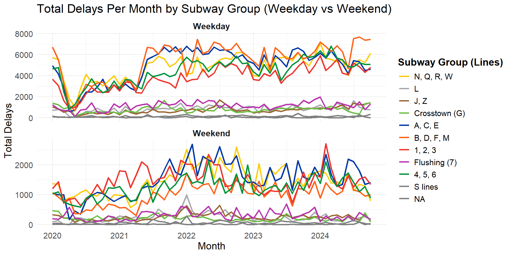
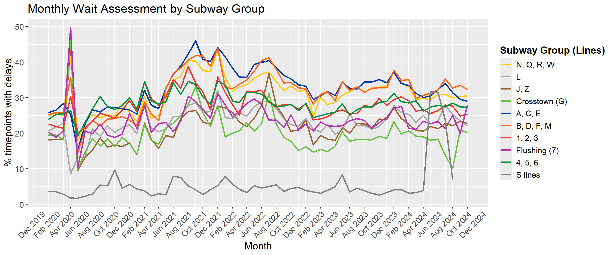

3 Exploring the Subway
This projects aims at exploring the different data around the New York subway system that is run by the MTA. The datasets here have been used from the nyc open data repository. Here, we explore the various trends with the data in this respect.
3.1 Why the subway?
First, it is important to visit why we choose the subway for this project. The subway is the most used mode of public transport in the city.
Here, we see clearly that the median daily ridership for the subway is higher than even the peak ridership for any other mode of transport in the city. This speaks volumes about how important the subway system is, to the city. We see everyday the number of people on the subway, but this graph tells us how much more the number really is.
This makes so that the subway system is essentially a lifeline for the city itself, and needs to be as effective as possible to ensure the best possible effects for the citizens of the city (New Yorkers - us).
3.2 Delays in the subway
Let’s take a look at the delays in the subway system in the city.
3.2.1 When are the delays occuring?
Here’s a graph faceted over the delays over the weekdays and weekends in the NYC subway system.

We notice that there are more delays in the weekdays than on weekends, and we acknowledge the fact that this could be due to the larger number of “days” in the weekdays (5) than in the weekends (2). However, the more interesting pattern to notice here is the sudden spike in the number of delays on weekdays around 2021. This is a timeline around the pandemic, and the full functioning of the subway had not returned. However, the lack of the same pattern on the weekends means there is more to it than just the pandemic, or some extra ripple effect due to the pandemic.
On further digging, we found that (a lack of workers) is potentially a big reason why this is occuring. This ties in with the timeline, as well as, is a valid reason why this occured.
3.2.2 Why are the delays occuring?
It is also important to correlate the same with the reasons mentioned in the dataset, which we perform below.
Here, we clearly see that crew availability was a problem pretty much through the year 2021, however this faceting tells another story about the delays that occurred after 2021 - notice the graphs on Operating Conditions. This indicates that the overall operating conditions of the subway only deteriorated over time on an overall scale. However, there are two more important things to note :
The A-C-E line had an initial increase in the total number of delays due to operating conditions and then a subsequent decrease. Similarly, the 4-5-6 lines have had an increase too. This also corresponds the the uptick in the planned ROW work column, where we see that there are more delays in the A-C-E lines to deter these problems.
Secondly we see a large number of delays on the 4-5-6 lines due to police and medical reasons, and this can probably be attributed to the (higher crime rates) in Brooklyn and Bronx, both of which boroughs are connected by these lines.
The above graph shows a raw number of the number of delays due to each category, but it is interesting to see a more nuanced approach to the same number.
Here, we ensure that we normalize across the number of days in weekdays and weekends but dividing the number of delays on weekdays by 5 and weekends by 2. A standard belief is that the total number of delays on weekends is higher, but clearly, there have been more infrastructure related delays on weekdays, over the last 4 years. This is concerning, since we see in the previous graph that the number of infrasture related delays has been more or less constant over the last 3 years, with 2020 being the all exempt pandemic year.
The other major observation is that the number of delays due to external factors is an extremely small percentage of the total number of delays. This is another major concern, since apart from Police and Medical related issues, all other categories are known to be preventable, or are otherwise under the control of the MTA.
3.2.3 How many trains are really delayed?
Here we look at the percentage of trains per month that are delayed.
Almost every month, there is a good percentage of trains that are delayed. This is not a good sign for the subway’s reliability. Especially when we notice that the weekday delays are much more frequent than the weekend delays.
Overall, the total number of late trains should be as close to zero as possible, but we do see some months in 2021 which had close to 35% trains delayed. This, especially on weekdays, causes huge problems to all commuters whose primary mode of transport is the subway (which as we saw in the first section, is a majority of New Yorkers).
This also looks like a one off trend for this year, where only the months in 2021 had a large nummber of delays, which could be attributed, as earlier to the article linked previously.
3.2.4 Are we getting alerts on time?
Clearly, we are getting more alerts on the weekends than on weekdays. This is opposite to the number of actual delays. This is a major problem, since typically, we expect the number of delays and number of service alerts to follow a similar pattern.
As part of this project, we also revisited the delays definition to ensure that even with an alert, a delay is still being counted in the total number of delays.
3.2.4.1 Side note : Alert data quality and distribution
During our experimentation, we came across many patterns that did not show any real patterns. For example, the alert distribution per line, or the alert distribution by group. However, this graph shows a fairly interesting characteristic of the alerts.
In this graph, the interesting insights are mainly around the distribution of alerts across weekday / weekend. We see that in every category, the average number of alerts per weekday is the same as the average number of alerts per weekend. This shows that there are no specific alerts (apart from weekday and weekend service). This is interesting because there are different patterns for both delays and alerts for every category, in the delays as we saw before, but not in the alerts. The overall number is more or less equal.
Another interesting insight is around the fact that there are a small number of alerts for “weekday service” on weekends and vice versa. This could be an issue with the data quality, or maybe there is a underlying reason why this occurs. We could contact the data source for an explanation on this. But Nonetheless, the presence of these rows is pretty interesting.
3.3 Wait times
Let us take a look at the percentage of delays in the subway system over the same time period.

Here, the first spike we notice is during the Covid 19 pandemic in 2020. But the most interesting pattern is the fact that the S line had a steady amount of delays throughout the 3 years, but suddenly in April 2024, we see a sudden spike in the wait times. No other line has such a drastic change in delays anywhere else. (This) is the only article specific to the S train in 2024. This can be a reason why this pattern exists.
3.4 Total Ridership analysis
Here, the ridership of particular lines is hard to gauge since the nyc subway has multiple crossover points, and it is hard to note which line a particular person got onto from the subway.
So, we see the total number of riders from every subway station.

Here, we see that there is a higher number of riders every weekday than every weekend. Most of these are stations that we expect to be here.
Times Square being the most populous station is quite expected, and since the grand central station connects the west side and east side, we can explain it being up there, along with all the tourists who would want to visit the station.
There is also a small mislabelling in the dataset where it notes 14th street (1,2,3) and (A,C,E) Penn station for the same pairs of station are separate. This can probably be attributed to the fact that these stations have seperate entrances multiple streets apart that are closer to the respective lines, however there is a link between these lines that is navigable without exits. This should ideally put the stations in the same bucket, but the MTA data collection team has not done this.
3.4.1 Ridership - Going one step deeper
Do all stations get a similar influx of passengers through the year? Are there stations that get a higher influx on certain weekdays?
Here, we notice that although the graphs for each of the stations is not exactly the same, it follows a very similar pattern. The existence of this patterns means that there are no line wise / area wise separate trends on the subway system on weekdays , all the stations get a higher influx of passengers at similar times in the year, and similarly the troughs in this trend also correspond to one another. Thus we say that we have similar patterns throughout.
However, we see that the overall ridership trends upwards, with time, since the pandemic. We see that there has been an increase in the total number of passengers overall. We can take a look at this along with the weekend plot in the interactive plot.
In a way, this is a sign of good subway design, since the stations that we see on this list follow more or less a similar order in terms of their size as well.